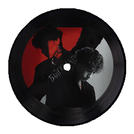

Три дня дождя
«Три дня дождя» – коллектив, который сформировался на территории Сочи (Россия) в 2020 году. У истоков группы стоит талантливый Глеб Викторов. Он начинал с того, что сочинял биты для других артистов, но вскоре сменил направление своей творческой деятельности и реализовал себя в качестве рок-певца.
Премьера альбома: "Байполар"

- Список треков:
- ᐅСлезы на ветер
- ᐅПодозрительно
- ᐅНе виноваты планеты
- ᐅНеважно
- ᐅОтпускай
- ᐅБежим(feat. Брутто)
- ᐅСмыслы(feat. Лали)
- ᐅНезаметно(feat. LIRIQ)
- ᐅВыдыхай(feat. Zivert)
- ᐅСегодня
- ᐅМама мне страшно(feat. тринадцать карат)
- ᐅЯ и одиночество
- ᐅРеки растают